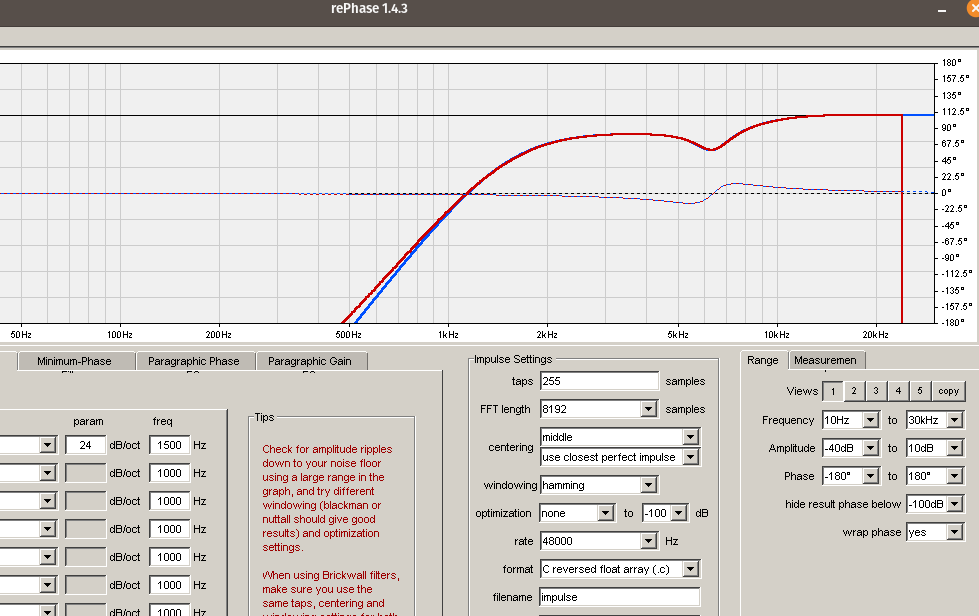
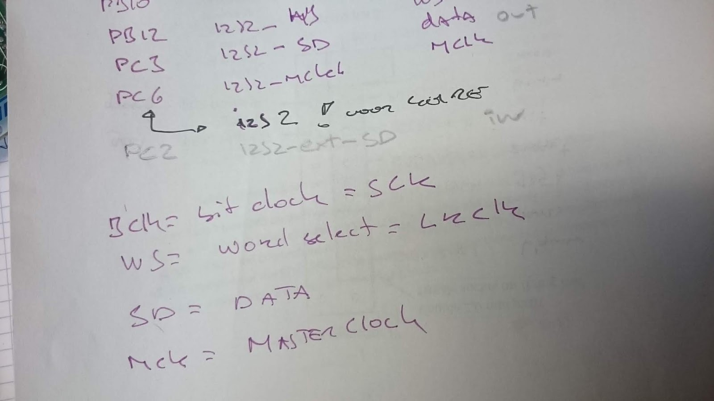
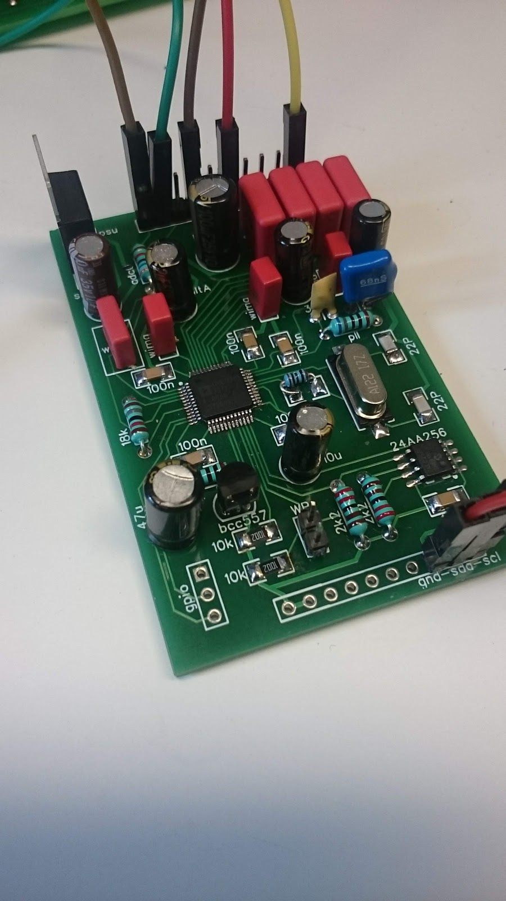

Blurbs
Short thoughts, context and side quests. 16 notes.
 Current Projects
Current ProjectsDynamic lin. phase EQ..some trials.. — part 1
On the bench is a rack of 31-band graphic EQs next to a home-brew DSP board and a metal horn/driver combo. The question is how to get dynamic EQ without the phase smear of a graphic. First, let's talk about EQ in…
 Current Projects
Current ProjectsDynamic lin. phase EQ..some trials.. — part 2
On the bench is the same DSP board, now running a crude dynamic linear-phase EQ in code. The first results are promising, but the code is as rough as the idea. The fun in coding your own DSP is that you quickly learn…
 Past Projects
Past ProjectsPMC LB1 a historic investigation in legacy sound, part 3
On the bench is a home-brew transmission line built from a cheap 4-inch driver and some folded plywood. The point is not the box; it is the FIR crossover that goes with it. As I mentioned in the previous post, I was…
 STM32
STM32STM32 in final 'product'
On the bench is the latest board I developed: a compact STM32F4 loudspeaker processor with its converters, connectors and a mains transformer. The global chip shortage has stalled it a bit, but the software side is…

FIR filteringPractical FIR
On the bench is a system that measures flat on the magnitude plot and still refuses to behave. That is usually where the FIR conversation starts. As ever so often in engineering, when some new technology is introduced…
 FIR filtering
FIR filteringFiltering by IIR or FIR
On the bench is a laptop with Audacity open on one side and a Smaart transfer function on the other. Before we argue about IIR or FIR, it helps to look at what the audio actually is. Before we dive into the depths of…
 FIR filtering
FIR filteringFiltering by FIR
On the bench is the processor that started all this: a Dolby Lake unit with its brick-wall FIR filters. Hearing what it did to the top end was the moment FIR went from a datasheet concept to something worth chasing. At…
 STM32
STM32STM32 audio processing part3
On the bench is a cheap Pmod I²S2 ADDA board, a tangle of Dupont wires and an STM32F407. It is the quickest way to get audio in and out of an MCU, and it is also where the HAL bugs start to show. If you are really…
 Blurbs
BlurbsImage slider
On the bench is a folder of four photos from an old JavaScript slideshow, now rebuilt as a static gallery. Four photos from an old JavaScript slideshow, rebuilt as a static image gallery.
 X-over Setup
X-over SetupMagnitude + Phase ... Bodeplots
On the bench is a measurement screen with magnitude on top and phase below, and a question that still trips people up: why do we need both? Some 150 years ago a couple of brilliant guys like Fourier, Hertz and Helmholtz…
 X-over Setup
X-over SetupMeasuring and adjusting a X-over
On the bench is a 12-inch horn-loaded cabinet, a measurement mic and a dual-FFT rig. The target is a 1600 Hz, 24 dB Linkwitz-Riley acoustic crossover, and the first question is whether the electrical filter alone gets…
 STM32
STM32Using STM32F4 series MCU as a loudspeaker processor
On the bench is a bare STM32F4 board with nothing but a blinking LED. Before it can process a single sample, it has to be programmed, and that means learning a different kind of coding. There is a lot of information out…

STM32STM32F4 loudspeaker processing part 2
On the bench is an STM32F4 Discovery board, a small I²S DAC and a tangle of jumper wires. Nothing is playing yet. The first milestone was simply getting the board to blink. Once that blinking light works — and maybe you…

STM32Powered Loudspeakers + DSP...
On the bench is a small board of my own making. It is the first step towards a powered loudspeaker that does exactly what I want: DSP inside the box, no front-panel controls, no rack of outboard gear. The details came…
 X-over Setup
X-over SetupValid dual FFT measurement
On the bench is a measurement laptop with Smaart open, a mic on a stand and a mid speaker in a closed box. The delay finder is snapped to the loudest part of the impulse response, and that is exactly the problem. On…
 X-over Setup
X-over SetupDual FFT analyzers..how to use SMAART
On the bench is a laptop running Smaart, a reference signal and a measurement mic in front of an old Axys T89 cabinet. The screen shows magnitude, phase and coherence, and the white noise is about to go off. Now we know…